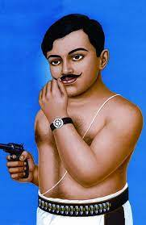

Chandra Shekhar Azad

Chandrasekhar Azad:: (born July 23,1906,Bhabra,India-died February 27,1931,Allahabad),Indian revolutionary who organized and led a band of militant YouthduringIndia'sindependence movement.
Azad was drawn into the Indian national movement at a young age. When apprehended by the police at age i5 while participating in Mohandas K.Gandhi's
noncooperation movement (1920-22) at Banares (now Varanasi), he gave his name as Azad (Urdu: “Free” or “Liberated”) and his address as “prison.” Although because of his age he was not imprisoned, he was given a severe flogging by the police. The Indian National Congress (Congress Party) soon lionized him, and he gained popularity among the Indian people.
Early Life
- Birth:Chandra Shekhar Azad was born on 23 July 1906 in Bhabhra village as Chandra Shekhar Tiwari, in a Brahmin family, in the princely-state of Alirajpur.
- Education:He received his early education at Bhavra. Later he went to Kashi Vidyapeeth, Banaras for higher education
- Death:Azad died on February 27, 1931, in Alfred Park, Allahabad, during the aforementioned gunfight with the police.
He kept his pledge by shooting himself, choosing death over capture.
Chandrasekhar Azad
- Entry into Freedom Struggle:
- Azad joined the non-cooperation movement led by Mahatma Gandhi in 1920, at the young age of 15.
- He actively participated in various protests and demonstrations against British rule.
- Formation of Hindustan Socialist Republican Association (HSRA):
- Azad was a member of the HSRA, a revolutionary organization that aimed to overthrow British rule through armed struggle.
- Along with other revolutionaries like Bhagat Singh, Sukhdev, and Rajguru, Azad played a key role in the activities of the HSRA.
Learn more about Chandrasekhar Azad
"The Khalsa will rule, and no one will remain a slave;
All will unite, the residents of India in India."
Created by priyanka diwakar